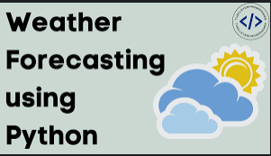
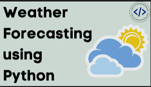

The link below contains my Tableau profile which includes a variety of data analytics projects that I have completed.
These projects showcase my skills in data visualization and analysis.
I invite you to explore my work and see how I can help you with your data analytics needs.
Thank you for your time!
 

The task of forecasting weather conditions for a specific
location and time is known as weather forecasting.
It is possible to forecast weather conditions for the next n days using weather data and algorithms.
We need a dataset containing historical weather data for a specific location in order to forecast
weather using Python. On Kaggle, I discovered a dataset based on New Delhi's daily weather data.
This dataset can be used for weather forecasting. The dataset can be found in the following
Link

This is a phone screen time analysis project I created. The dataset can accessed from Kaggle using the following
Link

This is a powwer BI project that I completed. The report contains information on different data jobs, including data scientists and data analysts.
It includes information on the average salary for each position, the skills required for each position, and the job outlook for each position.
Download the dataset using the following Link
Covid-19 has been a global pandemic for over two years now. In that time, there has been a lot of research done on the virus and vaccinations.
This SQL project analyses that data to help understand the virus and vaccinations better.
Download the dataset using the following Covid Vaccinations and
Covid Deaths